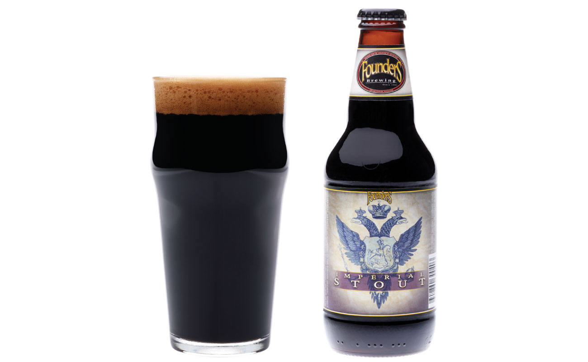

STOUT
Ста́ут (англ. stout) — тёмный элевый сорт пива, приготовленный с использованием жжёного солода, получаемого путём прожарки ячменного зерна, с добавлением карамельного солода. Первоначально варился в Ирландии как разновидность портера. Очень популярен в Великобритании и Ирландии.More